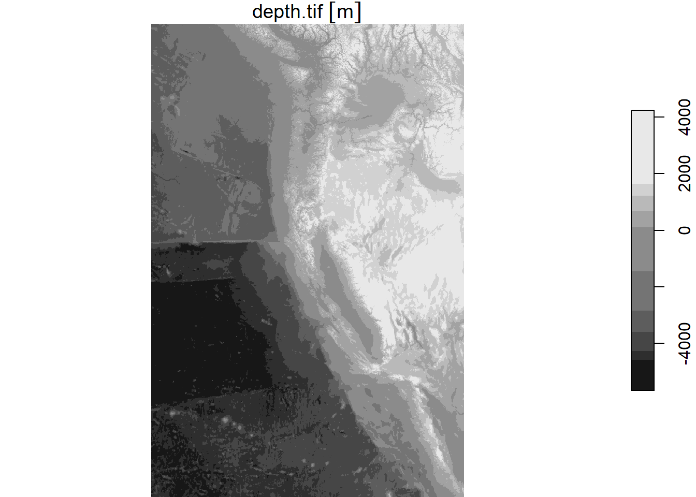
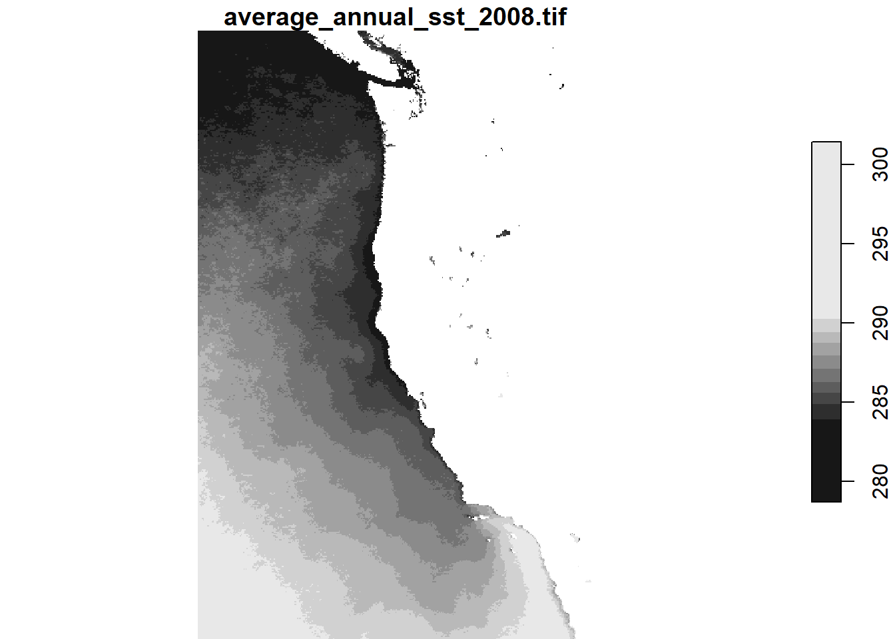
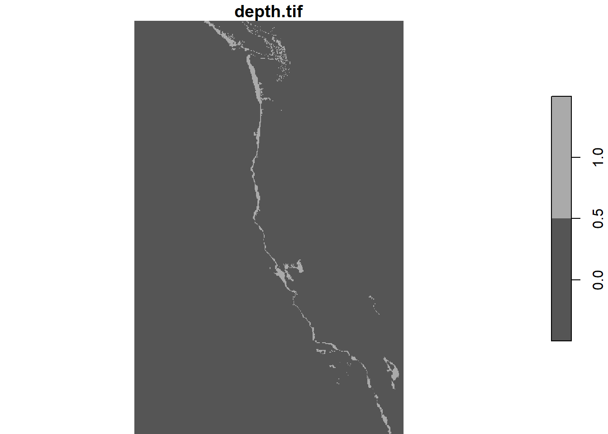
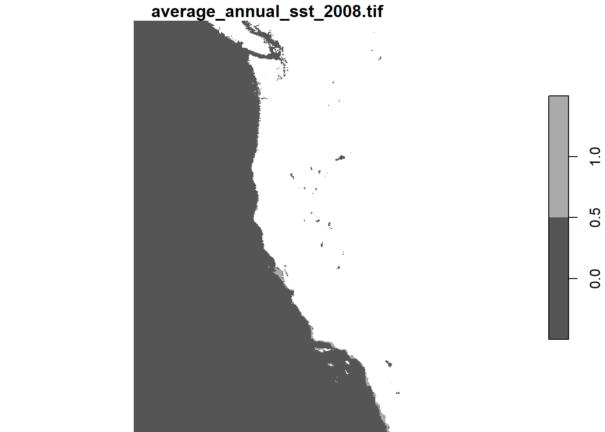
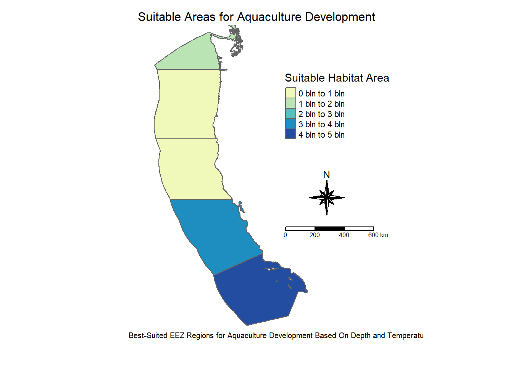
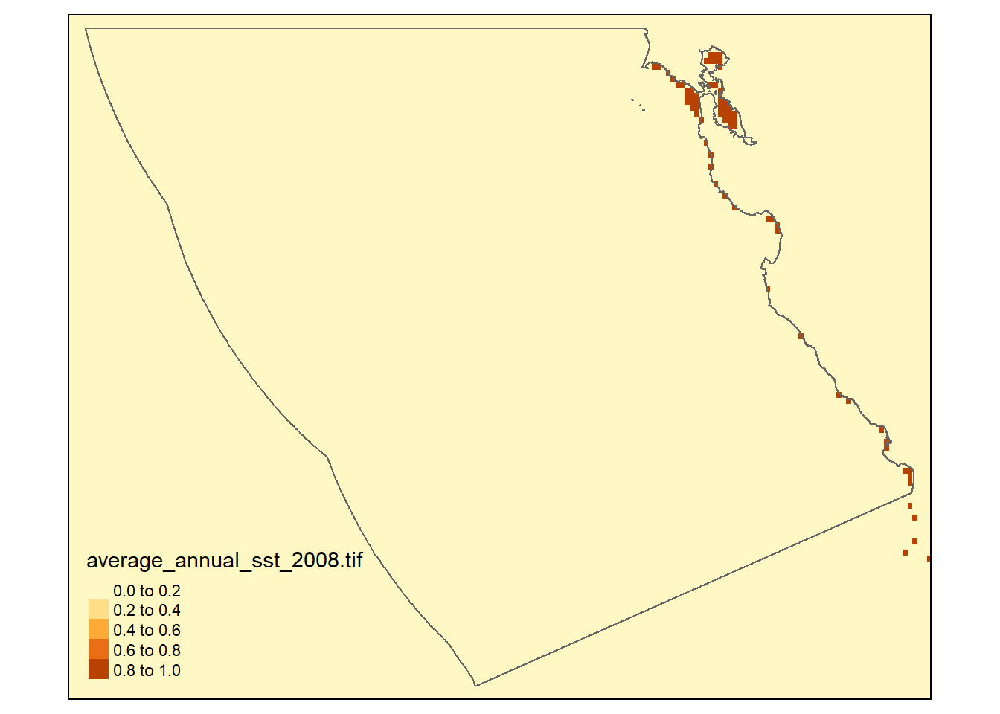
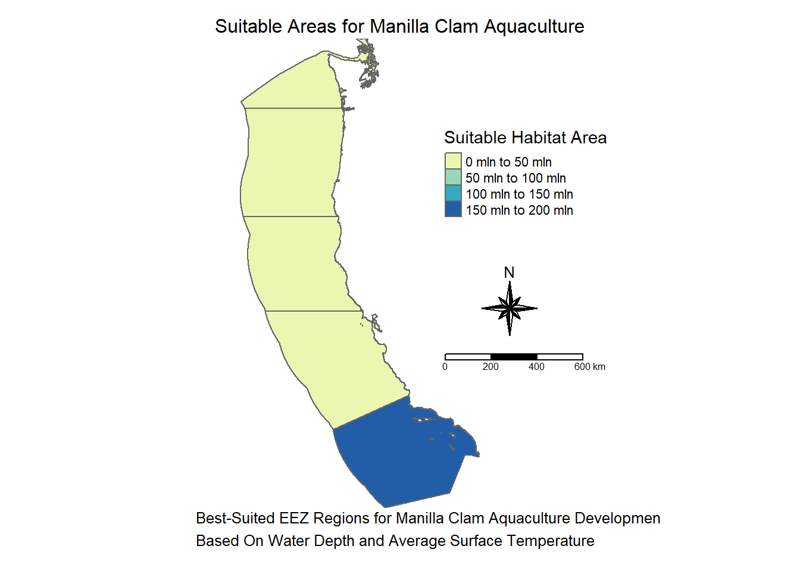

Code
# Load libraries
library(tidyverse)
library(here)
library(tmap)
library(ggplot2)
library(stars)
library(spDataLarge)
library(dplyr)
library(terra)“To make your workflow generalizable, you must create a function that has the following characteristics:
arguments:
outputs:
# Load libraries
library(tidyverse)
library(here)
library(tmap)
library(ggplot2)
library(stars)
library(spDataLarge)
library(dplyr)
library(terra)# Load data
# Read in NOAA Sea Surface Temperature files
sst_avg2008 <- read_stars(here("data", "average_annual_sst_2008.tif"))
sst_avg2009 <- read_stars(here("data", "average_annual_sst_2009.tif"))
sst_avg2010 <- read_stars(here("data", "average_annual_sst_2010.tif"))
sst_avg2011 <- read_stars(here("data", "average_annual_sst_2011.tif"))
sst_avg2012 <- read_stars(here("data", "average_annual_sst_2012.tif"))
# Read in Bathymetry files
depth <- read_stars(here("data", "depth.tif"))
# Load wc_regions shape file
wc_regions_clean <- st_read(here("data", "Wc_regions_clean.shp"))# Crop all rasters to the extent of the first raster
sst_avg2009 <- st_crop(sst_avg2009, st_bbox(sst_avg2008))
sst_avg2010 <- st_crop(sst_avg2010, st_bbox(sst_avg2008))
sst_avg2011 <- st_crop(sst_avg2011, st_bbox(sst_avg2008))
sst_avg2012 <- st_crop(sst_avg2012, st_bbox(sst_avg2008))# Stacking Rasters
sst_avg_stack <- c(sst_avg2008, sst_avg2009, sst_avg2010, sst_avg2011, sst_avg2012)# Plot to view
plot(sst_avg_stack)
My first step in this project is getting an overview of the data I am. I do this by looking at the first 5 rows(head) of any shape files and by doing a quick plot of the tif files.
# View the column names of the wc_regions data
print(colnames(wc_regions_clean))
print(head(wc_regions_clean))# Plot bathymetry data
plot(depth)
I am only going to show one plot of the surface temperature data because that is all I need right now to get an idea of how it will look.
# Plot the temperature data
plot(sst_avg2008)
First we want to get the mean over all the years.
sst_mean <- st_apply(sst_avg_stack, c("x", "y"), FUN = mean)
# Select a single attribute using dplyr::select
sst_mean <- sst_mean %>% select("average_annual_sst_2008.tif")Then we want to view the plot to ensure we did not destroy the data in the process.
# View plot
plot(sst_mean)
Our original temperature data is in Kelvin, but most people don’t use Kelvin so we will change it to Celsius by subtracting 273.5.
# Transfer to Celsius
celsius_mean_sst <- sst_mean - 273.15Next, we need to process the SST and depth data so that they can be combined. In this case the SST and depth data have slightly different resolutions, extents, and positions.
In basic terms, the extent of the raster is the box around the geographic area it covers. It wouldn’t be useful if the two maps covered completely separate areas. One of the easiest ways to fix mis-match extents is just to create a bounding box. A bounding box will make it so only the data within a certain geographical region will be used. For this I will take the dataset with the larger extent (depth) and crop it to match the extent of the other dataset(celsius_mean_sst). Normally this would mean the dataset with the smaller extent then becomes the bounding box.
# Crop the depth data to the mean_sst_celsius data
cropped_depth <- st_crop(depth, st_bbox(celsius_mean_sst))Talk about resolution
When working with maps resolution is basically how detailed the image is. Making sure the resolution between our maps is the same is important. If we don’t pay attention to resolution we can get maps that look weird and are inaccurate. Its like photoshoping a very pixelated image onto a very clear image, it looks weird and we can tell its wrong.
Like before we are going to try a function for this as well.
# Function to determine if Resolutions match
check_res_fun <- function(d1, d2) {
if (identical(st_dimensions(d1), st_dimensions(d2))) {
return(print("Resolutions match!"))
} else {
return(print("Resolutions do not match"))
}
}# Use the function to check the resolutions
check_res_fun(cropped_depth, celsius_mean_sst)[1] "Resolutions do not match"I can see that are resolutions do not match, so I must make them match myself.
# Resample the depth data to the mean_sst_celsius data using the near method
resampled_depth <- st_warp(cropped_depth, celsius_mean_sst, method = "near")
# Check if the resolutions match now
check_res_fun(resampled_depth, celsius_mean_sst)[1] "Resolutions match!"So now the resolutions match.
cropped_depth <- st_crop(resampled_depth, st_bbox(celsius_mean_sst))In the process of matching everything, I made several different variables representing the changes I make particularly to the depth variable. In order to avoid confusion, I am going to re-assign the names.
# Re-assign cropped_depth
depth_clean <- cropped_depth
sst_clean <- celsius_mean_ssttest_stack <- c(depth_clean, sst_clean)One of things I have learned is that mismatching CRSs is one of the things that will derail me the most when I am trying to work with geographical data sets. Lots of weird things can happen when coding and I think in projects like these about 90% of those things are caused by CRS troubles. If I were ever caught in the bad place, one of the signs would be mis-matched CRSs.
In order to prevent these troubles, I will write a function that will tell me if data sets have mismatching CRSs
# Function to determine if CRSs match
check_crs_fun <- function(d1, d2) {
if (identical(st_crs(d1), st_crs(d2))) {
return(print("CRSs match!"))
} else {
return(print("CRSs do not match"))
}
}Then we can check our data sets:
check_crs_fun(depth_clean, sst_clean)
check_crs_fun(depth_clean, wc_regions_clean)
check_crs_fun(wc_regions_clean, sst_clean)Here I can see that two of my CRSs match.
Our next step will be to change the CRSs so they are consistent. We will do this by creating a function that will change the CRS of the first inputted dataset to match the crs of the second inputted dataset. I am going to change the CRSs of the depth and wc_regions_clean datasets to match the sst_avg datasets.
change_crs_fun <- function(df1, df2) {
if (identical(st_crs(df1), st_crs(df2))) {
print("no change")
return(df1)
} else {
df1 <- st_transform(df1, st_crs(df2))
print("changed first dataset's CRS to match the second dataset's CRS")
return(df1)
}
}# Change the CRSs to match and store in new varibles
depth_clean <- change_crs_fun(depth_clean, sst_clean)[1] "no change"wc_regions_clean <- change_crs_fun(wc_regions_clean, sst_clean)[1] "changed first dataset's CRS to match the second dataset's CRS"# Check if the CRSs match now
check_crs_fun(depth_clean, sst_clean)[1] "CRSs match!"check_crs_fun(wc_regions_clean, sst_clean)[1] "CRSs match!"All of our CRSs should be the same now. By check st_crs(sst_avg2008), I can see that the CRS the sst_avg2008 uses is EPSG 9122. So I will now create a warning message that will tell me if there CRS is not 9122.
# Create crs warning function
crs_warning <- function(df) {
# Check if the CRS is different from EPSG:9122
if (st_crs(df) != st_crs(sst_avg2008)) {
warning("Warning: The CRS of the dataset is not EPSG:9122!")
} else {
message("The CRS is EPSG:9122.")
}
}Because we stacked the rasters, we want to ensure that the CRSs will still match what we had before, so we are going to run our CRS matching function again.
crs_warning(sst_avg_stack)The end goal of this project is to have one single function that can be given the information about the depths a species can live in, the suitable temperature for the species, and the same of the species and produce a map of the west coast that shows which EEZ regions will be ideal for aquaculture of that species. Instead of trying to write the function all at once I will be doing each step in parts and putting them all together at the end. We will be using information about Oysters to begin with. They thrive at SSTs between 11°C - 30°C and depths 0-70 meters below sea level.
My strategy here is to put in minimum and maximum values for the potential depths and temperatures, then I want to assign areas that are within the desired range 1 and the areas that aren’t in the desired range 0s. I am going to do SST and depth individually then multiply them together. I think this will work because 1 * 0 = 0 and 1 * 1 = 1, so in the end I can just plot the areas with the ones and that will be where the habitat is.
# Reclassify Sea Surface Temperature (SST) to identify suitable areas based on temperature range
# Suitable SST range: 11°C to 30°C
suitable_sst <- (sst_clean >= 11 & sst_clean <= 30)
# Convert logical values (TRUE/FALSE) to integers (1/0) to create a binary map of suitable areas
# Preserve the 'stars' format while applying the conversion
suitable_sst <- st_apply(suitable_sst, c("x", "y"), function(x) as.integer(x))
# Plot the reclassified SST map
plot(suitable_sst)
# Reclassify Depth to identify suitable areas based on depth range
# Suitable Depth range: -24m to 0m (depths above sea level)
suitable_depth <- (depth_clean >= -70 & depth_clean <= 0)
# Convert logical values (TRUE/FALSE) to integers (1/0) to create a binary map of suitable areas
# Preserve the 'stars' format while applying the conversion
suitable_depth <- st_apply(suitable_depth, c("x", "y"), function(x) as.integer(x))
# Plot the reclassified Depth map
plot(suitable_depth)
# Combine SST and Depth suitability maps by multiplying them
# The result will be a binary map indicating areas that are suitable for both SST and Depth
suitable_locations <- suitable_sst * suitable_depth
plot(suitable_locations)
Based on those not-polished at all preliminary plots, I feel confident that that method will work so now I will make a function that just plots suitable depths and SSTs. Adding a species name into the title of the plot isn’t super difficult, so I will just throw that in there too.
# Define function to create a map based on depth and temperature ranges for a given species
first_map_fun <- function(min_temp, max_temp, min_depth, max_depth, species_name) {
# Step 1: Reclassify Depth (keep logical 1/0 format)
# Create a logical matrix where TRUE (1) represents areas within the depth range
depth_range <- (depth_clean >= min_depth & depth_clean <= max_depth)
# Step 2: Convert logical values (TRUE/FALSE) to integers (1/0)
# Apply the transformation to keep the 'stars' format
depth_range <- st_apply(depth_range, c("x", "y"), function(x) as.integer(x))
# Replace NA values in depth range with 0
depth_range[is.na(depth_range)] <- 0
# Step 3: Reclassify Sea Surface Temperature (SST) (keep logical 1/0 format)
# Create a logical matrix where TRUE (1) represents areas within the temperature range
sst_range <- (sst_clean >= min_temp & sst_clean <= max_temp)
# Convert logical values (TRUE/FALSE) to integers (1/0) and preserve the 'stars' format
sst_range <- st_apply(sst_range, c("x", "y"), function(x) as.integer(x))
# Replace NA values in SST range with 0
sst_range[is.na(sst_range)] <- 0
# Step 4: Combine SST and Depth ranges to create a 'suitable' area map
# A value of 1 means both depth and temperature are suitable for the species
combo_range <- sst_range * depth_range
# Replace NA values in the combined range with 0
combo_range[is.na(combo_range)] <- 0
# Step 5: Convert the suitable area map to a 'stars' object for mapping
combo_range <- st_as_stars(combo_range)
# Step 6: Create the map using 'tmap'
area_map <- tm_shape(wc_regions_clean) +
tm_polygons() + # Add region polygons
tm_shape(combo_range) +
tm_raster() + # Add the suitable area raster
tm_shape(wc_regions_clean) +
tm_borders() + # Add borders around regions
tm_layout(
title = paste("Map of Depth and Temperature for", species_name), # Title of the map
main.title.size = 1, # Adjust title size
panel.show = FALSE, # Hide the panel grid
frame = FALSE # Hide the frame around the map
)
# Step 7: Print the map
print(area_map)
}Then we will input suitable depth and SST for oysters, just for testing.
# Use function
first_map_fun(11, 30, -70, 0, "Oyster")
It looks like it worked! It is a very ugly map, but it shows us that the function worked. We can see there are some areas mostly along the lower part of the coast that would be suitable for Oysters.
I would like it to color each eez area by which area has the most amount of suitable area in it.
My thought process for this is that since we have already turned the suitable depth and temperatures into 1s and 0s, the was we can find the region with the most suitable habitat is by summing up the number of 1s in each region, and the region with the most 1s will have the most suitable habitat. Here is what we need to do to accomplish this.
# Step 1: Rasterize the wc_regions_clean shapefile to match the suitable_locations raster
region_raster <- st_rasterize(wc_regions_clean, suitable_locations, field = "rgn", fun = "first")
# Step 2: Multiply suitable_locations raster by the region_raster
suitable_by_region <- suitable_locations * region_raster
# Step 3: Sum values within each region
region_sums <- st_extract(suitable_by_region, wc_regions_clean, fun = sum, na.rm = TRUE)
# Step 4: Test plot
plot(region_sums)
Based on the plot, it looks like this will work. Because we are going to be using the same shapefile, I don’t feel as much of a need to turn this into its own function for testing, so I will move to the next step.
Constantly re-running a function to test which map aesthetics I like would take a long time, so instead I am just going to make the map here, then input it into the final function.
tm_shape(wc_regions_clean) +
tm_polygons() + # Visualize the boundaries of the EEZ regions
tm_shape(region_sums) +
tm_fill(palette = "YlGnBu", title = "Suitable Habitat Area") + # Add color representing habitat suitability
tm_borders() + # Overlay region borders for clarity
tm_compass(position = c(0.64, 0.43), type = "8star", size = 3) + # Add a compass to indicate direction
tm_scale_bar(position = c(0.58, 0.35)) + # Include a scale bar for distance reference
tm_layout(
main.title = "Suitable Areas for Aquaculture Development", # Set the map title
asp = 1,
main.title.size = 1,
panel.show = FALSE,
frame = FALSE,
inner.margins = c(0.1, 0.1, 0, 0.3),
main.title.position = c("center", "top"),
legend.position = c(0.58, 0.65)
) +
tm_credits(
text = "Best-Suited EEZ Regions for Aquaculture Development Based On Depth and Temperature",
position = c(0.1, 0.05), size = 1, align = "center" # Display credits at the bottom
)
I like the way this map looks, and I think any little issues can be fixed when we put the function together.
# Function to create a map showing suitable habitat for a species based on temperature and depth criteria
area_map_fun <- function(min_temp, max_temp, min_depth, max_depth, species_name) {
# Step 1: Reclassify Depth (logical 1/0 based on specified range)
# Create a logical raster (TRUE/FALSE) where depths are within the specified range
depth_range <- (depth_clean >= min_depth & depth_clean <= max_depth)
# Convert logical values (TRUE/FALSE) to integers (1/0) using 'st_apply'
depth_range <- st_apply(depth_range, c("x", "y"), function(x) as.integer(x))
# Set any NA values to 0 (indicating unsuitable depth)
depth_range[is.na(depth_range)] <- 0
# Step 2: Reclassify Sea Surface Temperature (SST) (logical 1/0 based on specified range)
# Create a logical raster (TRUE/FALSE) where SST is within the specified range
sst_range <- (sst_clean >= min_temp & sst_clean <= max_temp)
# Convert logical values (TRUE/FALSE) to integers (1/0) and preserve stars format
sst_range <- st_apply(sst_range, c("x", "y"), function(x) as.integer(x))
# Set any NA values to 0 (indicating unsuitable temperature)
sst_range[is.na(sst_range)] <- 0
# Step 3: Combine SST and Depth Ranges
# Create a combined suitability raster where both depth and SST conditions are met
combo_range <- sst_range * depth_range
# Set any NA values in the combined raster to 0
combo_range[is.na(combo_range)] <- 0
# Convert the suitable area into a 'stars' object
combo_range <- st_as_stars(combo_range)
# Step 4: Rasterize the region shapefile (wc_regions_clean) to match the suitable area raster
# Rasterize the region shapefile based on the "rgn" field, aligning it with the suitable area raster
region_raster <- st_rasterize(wc_regions_clean, combo_range, field = "rgn", fun = "first")
# Step 5: Multiply the suitable area raster by the region raster to isolate suitable regions
suitable_test <- combo_range * region_raster
# Step 6: Calculate the sum of suitable areas within each region (sum of 1s)
region_sums <- st_extract(suitable_test, wc_regions_clean, fun = sum, na.rm = TRUE)
# Step 7: Create the heatmap using the suitable region sums
area_map <- tm_shape(wc_regions_clean) +
tm_polygons() + # Draw region boundaries
tm_shape(region_sums) + # Add region sums (suitable habitat area)
tm_fill(palette = "YlGnBu", title = "Suitable Habitat Area") + # Color the regions by suitable habitat area
tm_borders() + # Add borders around the regions
tm_compass(position = c(0.64, 0.43), type = "8star", size = 3) + # Add compass
tm_scale_bar(position = c(0.58, 0.35)) + # Add scale bar
tm_layout(
main.title = paste("Suitable Areas for", species_name, "Aquaculture"),
asp = 1,
main.title.size = 1,
panel.show = FALSE,
frame = FALSE,
inner.margins = c(0.1, 0.1, 0, 0.3),
main.title.position = c("center", "top"),
legend.position = c(0.58, 0.65)
) +
tm_credits(
text = paste("Best-Suited EEZ Regions for", species_name,
"Aquaculture Development\nBased On Water Depth and Average Surface Temperature"),
position = c(0.1, 0.01),
size = 1,
align = "left"
)
# Step 8: Print the map
print(area_map)
}area_map_fun(11, 30, -70, 0, "Oyster")
And thats the final function!
No we can use it on any aquaculturely relevent species we want, so I will use it on the Manila Clam (Ruditapes philippinarum)! According to sealifebase.ca, Manilla clams prefer temperatures of 18°C - 35°C and depths of 0 - 100 meters. So I will put that info in my function and a graph will appear!
area_map_fun(18, 35, -100, 0, "Manilla Clam")
We can see from this map that the region with the most suitable habitat is on the very southern part of the coast, which isn’t surprising considering its preference for high temperatures.
Hopefully after reading this you have some idea of how you might make a similar function yourself! Thanks for reading!
Flanders Marine Institute (VLIZ). (n.d.). Exclusive Economic Zone (EEZ) boundaries. Maritime Boundaries Database, version unknown. Retrieved from https://www.marineregions.org/eez.php (Accessed: November 29, 2024)
General Bathymetric Chart of the Oceans (GEBCO) Compilation Group. (2022). GEBCO_2022 Grid [Data set]. https://doi.org/10.5285/e0f0bb80-ab44-2739-e053-6c86abc0289c (Accessed: November 29, 2024)
National Oceanic and Atmospheric Administration (NOAA). (2018). Daily Global 5km Satellite Sea Surface Temperature Anomaly (Version 3.1). NOAA Coral Reef Watch. Retrieved from https://coralreefwatch.noaa.gov/product/5km/index_5km_ssta.php (Accessed: November 29, 2024)
SeaLifeBase. (n.d.). Ruditapes philippinarum (Adams & Reeve, 1850): Japanese carpet shell. Retrieved November 30, 2024, from https://www.sealifebase.ca/summary/Ruditapes-philippinarum.html